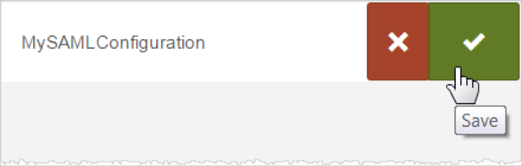
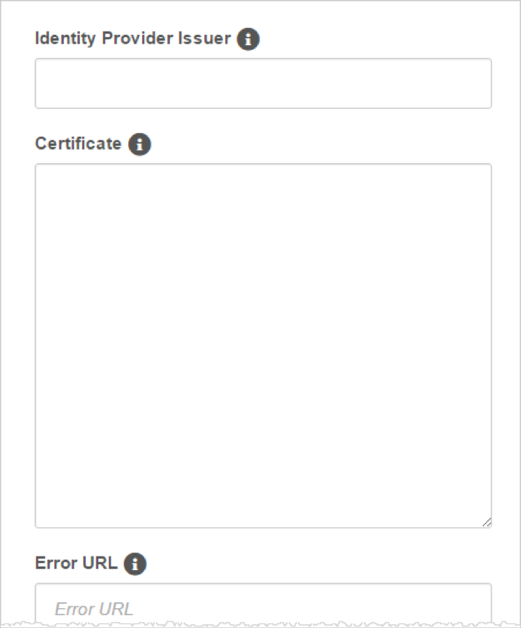
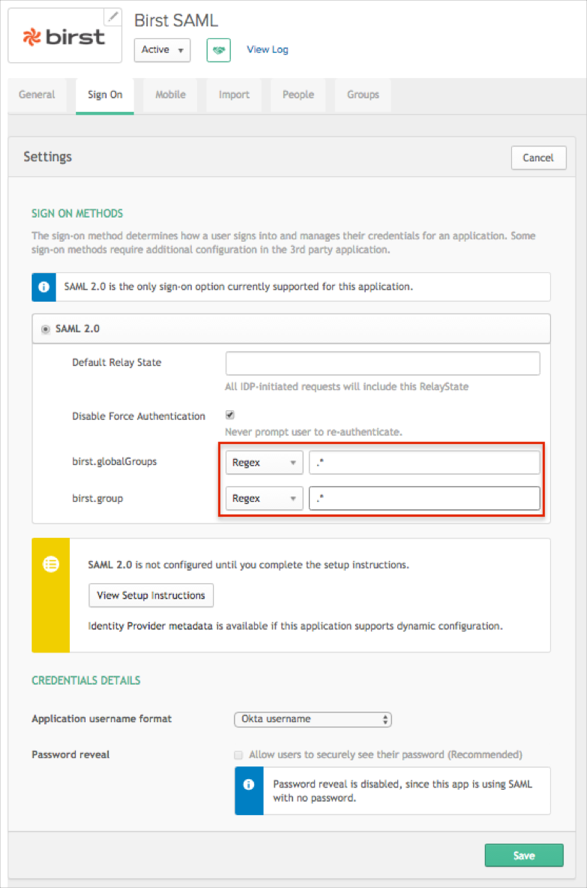

The Birst application is pre-configured to pass the custom attributes as part of the SAML assertion. Make sure that the custom attributes are populated in the Okta User Base Profile, and also have the correct attribute mappings set with AD/LDAP (if needed). If this value is empty, Okta will pass null values to Birst.
If you don’t need to send custom attributes, skip these steps.
Follow these instructions to add a custom attribute:
In Okta, navigate to Admin > Directory > Profile Editor.
Select the Okta filter in the left side navigational pane.
Click the edit Profile button.

Click Add Attribute.

Enter an attribute value for the Display name and Variable name fields.
If needed, enter a Data Type.
Click Add Attribute.

The following Birst attributes are supported:
| Birst Attribute Name | Okta Attribute Variable Name |
|---|---|
| birst.embedded | birst_embedded |
| birst.module | birst_module |
| birst.spaceId | birst_spaceId |
| birst.dashboard | birst_dashboard |
| birst.page | birst_page |
| birst.filters | birst_filters |
| birst.hideDashboardNavigation | birst_hideDashboardNavigation |
| birst.hideHeader | birst_hideHeader |
| birst.themeName | birst_themeName |
| birst.dashboardParams | birst_dashboardParams |
| birst.dashParamsSeparator | birst_dashParamsSeparator |
| birst.hideDashboardPrompts | birst_hideDashboardPrompts |
| birst.viewMode | birst_viewMode |
| birst.filterLayout | birst_filterLayout |
| birst.renderType | birst_renderType |
| birst.viewHTML5 | birst_viewHTML5 |
| birst.helpURL | birst_helpURL |
| embeddedView | birst_embeddedView |
| reportName | birst_reportName |
| birst.userLoginName | birst_userLoginName |
| birst.userEmailAddress | birst_userEmailAddress |
| birst.accountId | birst_accountId |
| birst.memberSpaces | birst_memberSpaces |
| birst.userProfile | birst_userProfile |
| birst.defaultSpace | birst_defaultSpace |
| birst.dashboardsView | birst_dashboardsView |
| birst.spaceCreation | birst_spaceCreation |
| birst.userProfile | birst_userProfile |
Log in to Birst as an administrator.
From the Home page, click ACCOUNT SETTINGS:
On the SAML Configurations tab, click Add (the + sign).
Enter a name for your new configuration (here MySAMLConfiguration), then click Save (the check mark).

The SAML configuration screen appears:

Enter the Identity Provider Issuer, also called the Entity ID: Copy and paste the following:
Sign into the Okta Admin Dashboard to generate this variable.
Provide a Certificate: Copy and paste the following (in PEM text format):
Sign into the Okta Admin Dashboard to generate this variable.
Optionally, enter the URL for a custom error page to be redirected to if an error occurs.
Optionally, enter the URL for a custom log out page to be redirected to on log out.
Enter the idle duration in minutes after which a timeout occurs. The default is 20 minutes.
If you want to allow service provider-initiated access:
Check SP-Initiated.
Identity Provider Single Sign-On: Copy and paste the following:
Sign into the Okta Admin Dashboard to generate this variable.
Click Save.
For service provider-initiated access:
After you click Save, Birst generates and displays a SAML Configuration ID.
Use this SAML Configuration ID value in the birst.idp query parameter for logging into Birst. For example:
https://login.bws.birst.com/SAMLSSO/Services.aspx?birst.idpid=SAML_config_ID
When browsers connect to this URL, they are redirected to the Identity Provider Single Sign-On URL as specified in Step 10.
Tip: Users can bookmark the redirect URL for easier access to Birst.
OPTIONAL: The Birst application is pre-configured to pass the groups as part of the SAML assertion. The following groups attributes are supported: birst.globalGroups, birst.group. In order to send user groups as part of the SAML assertion:
In OKTA, select the Sign On tab for the Birst app, then click Edit.
Select your preferred group filter from the dropdown list (the Regex rule with the value ".*" in order to send *all* groups to the Birst instance we used in our example) for the required attribute.
Click Save.

Done!
Notes:
IdP-initiated flows, SP-initiated flows, and Just In Time (JIT) provisioning are all supported.
For SP-initiated flows:
Open the following URL: [yourBaseUrl]?birst.idpid=[yourIdpId]